So sánh trước – sau
Đợt sửa lỗi trải nghiệm điện thoại, ngày 24/11/2026. Ảnh chụp từ web tĩnh (đúng bản khách xem), dữ liệu mẫu 175 sản phẩm. Ảnh khảo sát ban đầu đầy đủ ở thư mục before/khao-sat-24-11/.
Điện thoại – đầu trang
Thêm giờ mở cửa ở thanh trên cùng, nút menu ☰, thanh “Nhắn Zalo / Giỏ hàng” cố định ở dưới. Bỏ hình trang trí lớn để sản phẩm lên gần đầu trang.
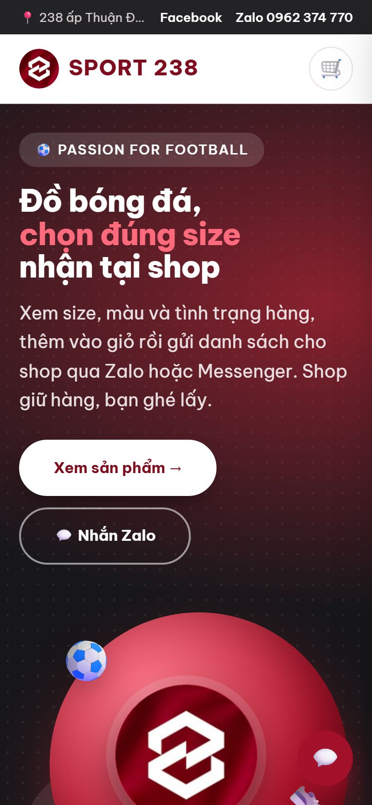

Điện thoại – đầu trang (chế độ tối)
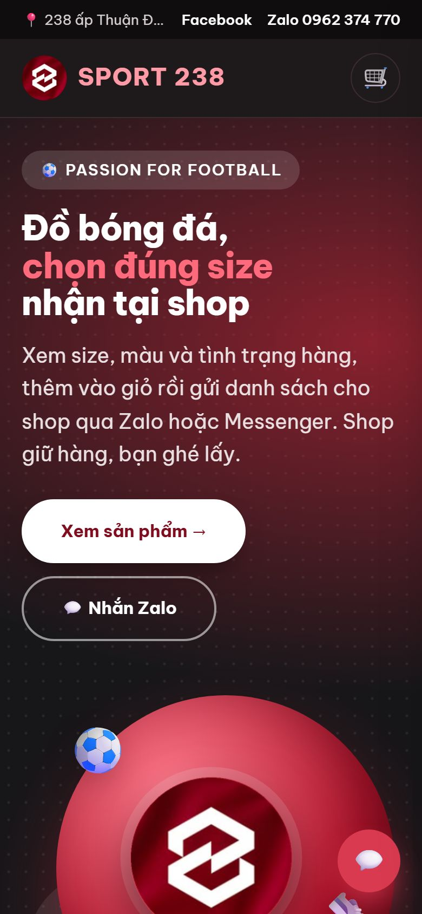
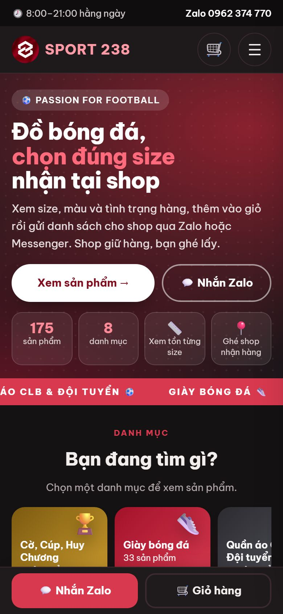
Điện thoại – kéo xuống 1 màn hình
Trước: vẫn là hình trang trí. Sau: đã tới ô tìm kiếm và sản phẩm (sản phẩm đầu tiên ở 1.156 px, trước là 3.908 px).

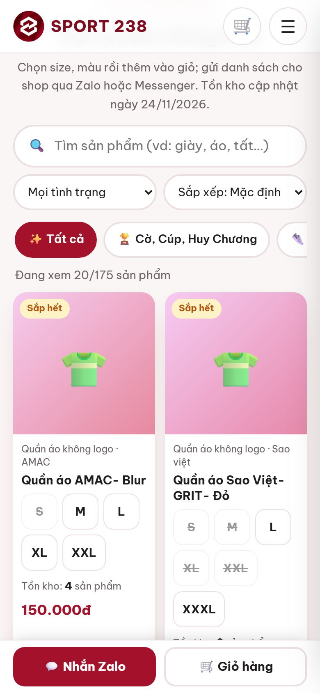
Điện thoại – danh sách sản phẩm
2 sản phẩm mỗi hàng (trước 1). Nút size, màu cao 44 px cho dễ bấm. Hiện 20 sản phẩm mỗi lần, có nút “Xem thêm”: trang dài 8.458 px thay vì 119.543 px.

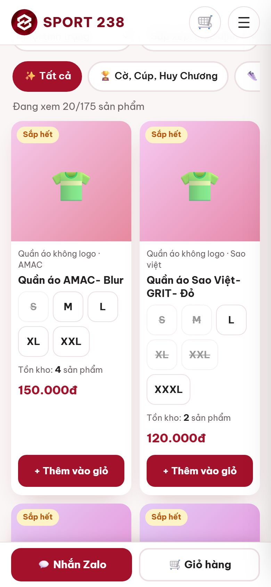
Điện thoại – danh sách sản phẩm (chế độ tối)

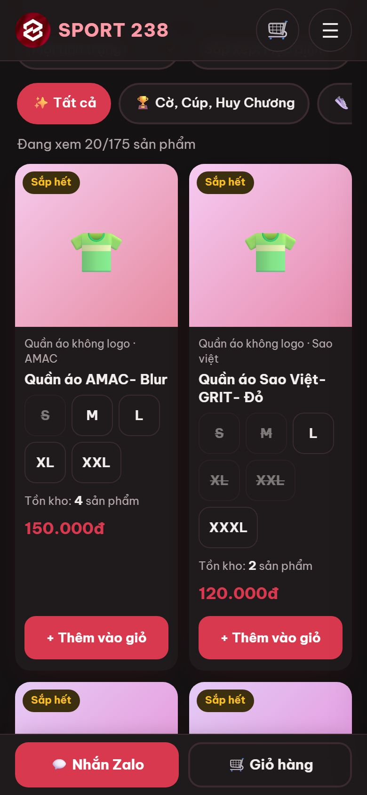
Điện thoại – menu ☰ (mới)
Trước: trên điện thoại không có menu. Sau: menu tới Danh mục, Sản phẩm, Về shop, Cách mua, nút Zalo, địa chỉ và giờ mở cửa.
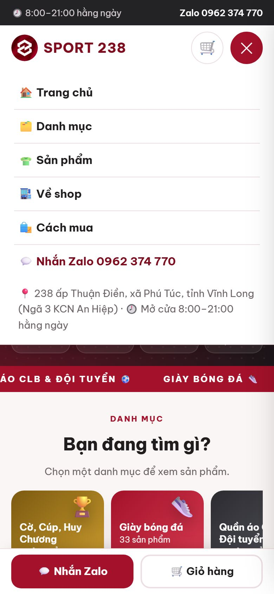
Tìm “giay” (không dấu)
Trước: 0 kết quả. Sau: 36 kết quả, giống gõ “giày”. Tìm được cả theo mã (PVN…), hãng, màu.


Điện thoại – trang chi tiết
Nút Zalo nổi không còn che nút chọn loại. Màu, size đã chọn trên thẻ được giữ. Thêm giờ mở cửa.
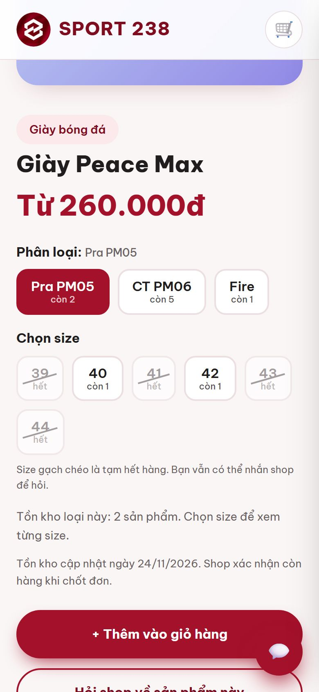

Điện thoại – trang chi tiết (chế độ tối)
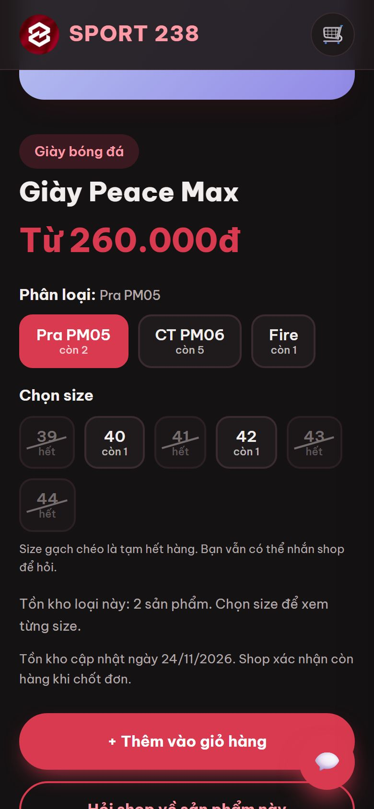
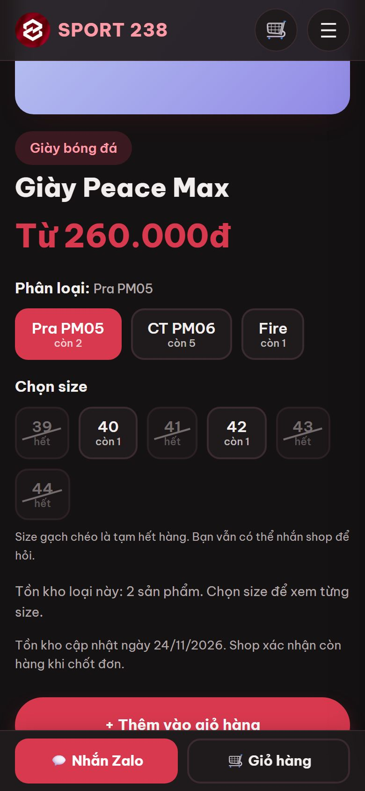
Điện thoại – giỏ hàng
Nút +/− và nút đóng to hơn (44 px). Ghi chú nhận hàng có giờ mở cửa.

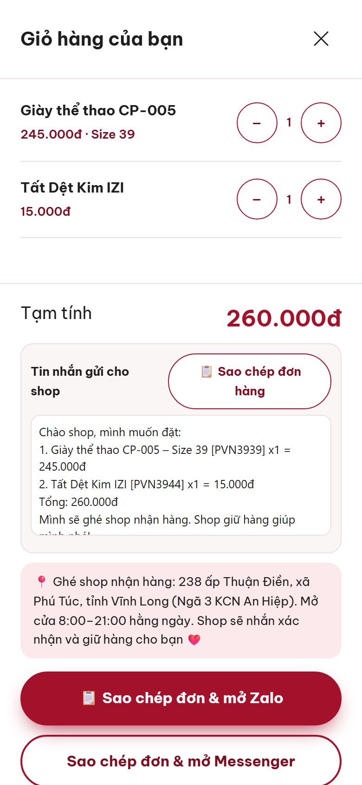
Điện thoại – giỏ hàng (chế độ tối)
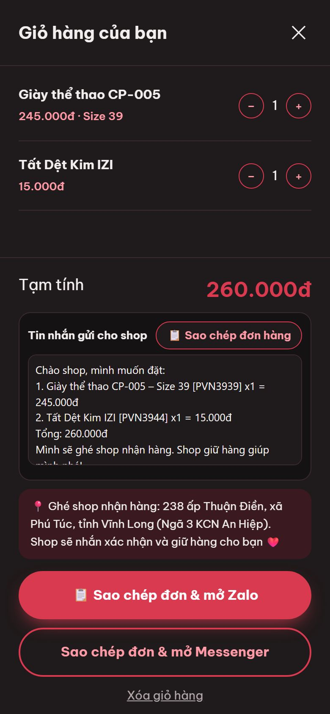

Bấm “Xóa giỏ hàng”
Trước: xóa ngay, không hỏi. Sau: hỏi lại “Xóa hết 2 món trong giỏ hàng?” với hai nút Xóa hết / Giữ lại.


Máy tính – đầu trang
Nút “💬 Zalo” trên thanh đầu trang; giờ mở cửa ở thanh trên cùng.


Máy tính – danh sách sản phẩm
Sản phẩm nằm ngay sau danh mục (bỏ dải “Hàng đang có sẵn” trùng lặp); 20 sản phẩm mỗi lần, có nút “Xem thêm”.
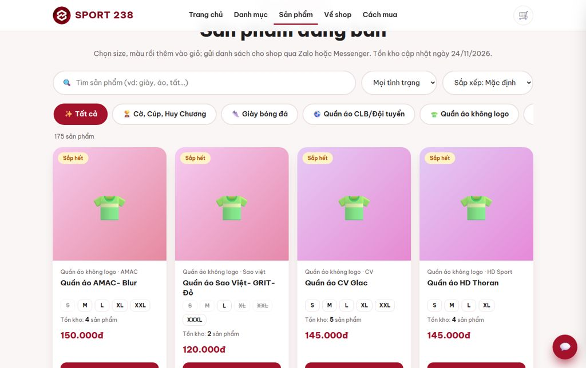